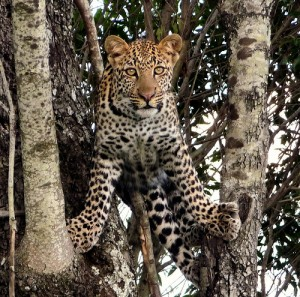

Predators and Prey
-
Desert predators and prey
The Desert predators and prey include: coyotes are often a big part of the predatory system being as they’re big and everything else is usually small. They are known as “omnivore opportunists” meaning they look for whatever they can eat. The rattlesnake is also a very dangerous predator, even to humans. He has caused many deaths for people and is better left on his own.
-

Tropical predators and prey
The tropical predators and prey include the big cats: tigers, leopards, and jaguars. Rain forest alligators and crocodiles, the big snakes of the rain forest, and forest eagkes.
-
Savannah predators and prey
Savannah grassland is characterised by drought-resistant shrubs and grasses, such as acacia and baobab trees, and carnivorous predators like lions, cheetahs, and leopards. The African savannah plays host to a multitude of well-known and charismatic herbivores such as plains zebra, black rhinoceros, greater kudu and several subspecies of giraffe, two of which are at risk of extinction.